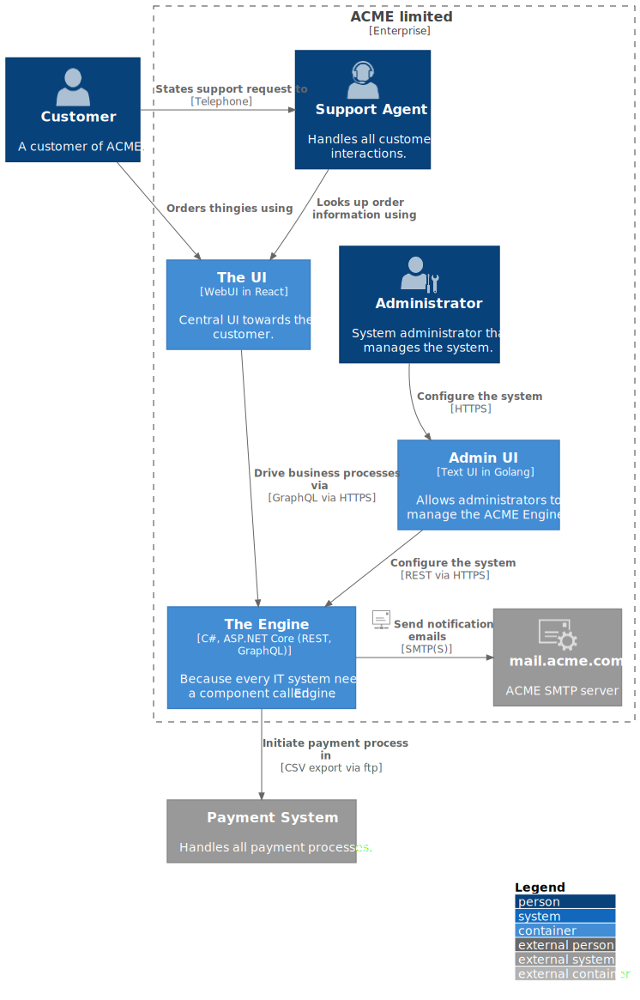

Level 1
The scope of this page is the ACME Product - System Level (system) in version 0.9.0.
|

Figure 1. C4 Container Diagram of the whole system
- Motivation
-
<text explanation>
- Contained Building Blocks
-
<Description of contained building block (black boxes)>
- Important Interfaces
-
<Description of important interfaces>